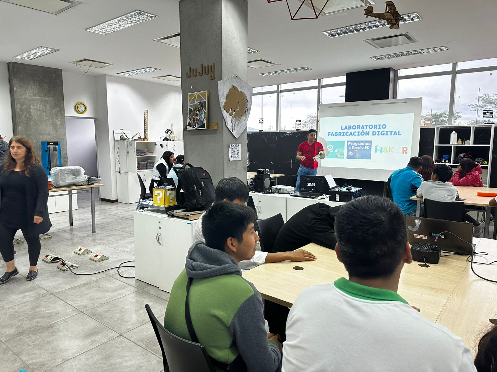
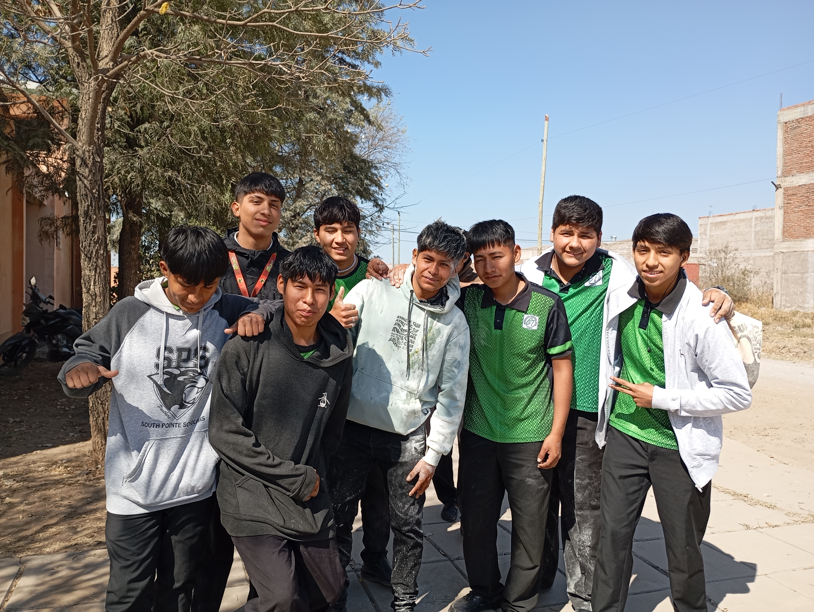
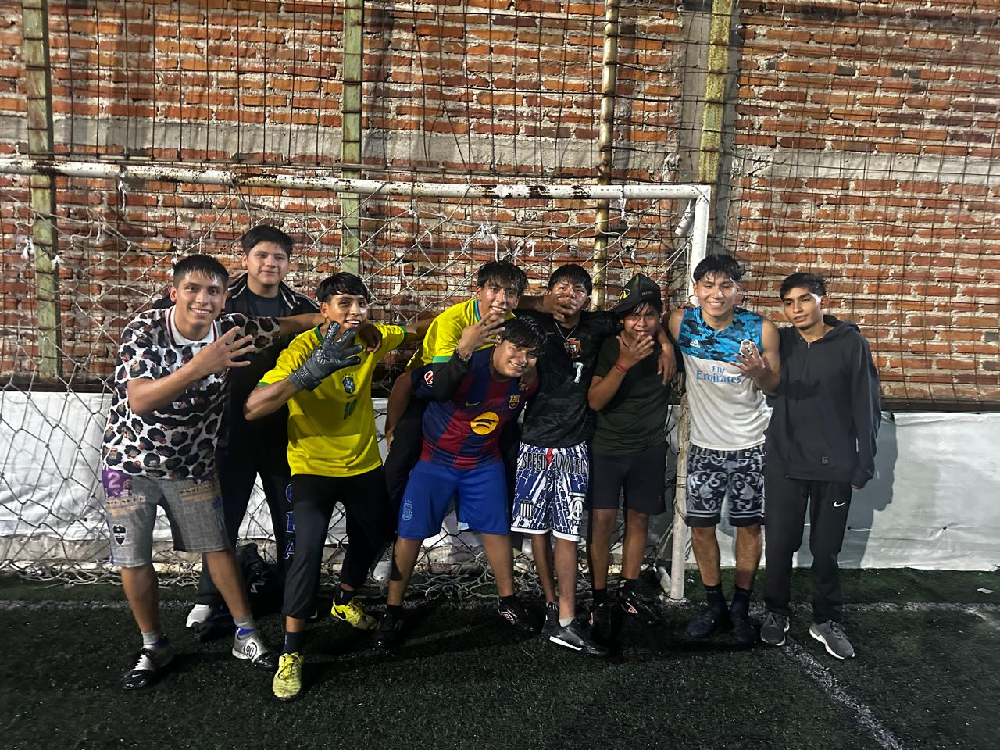
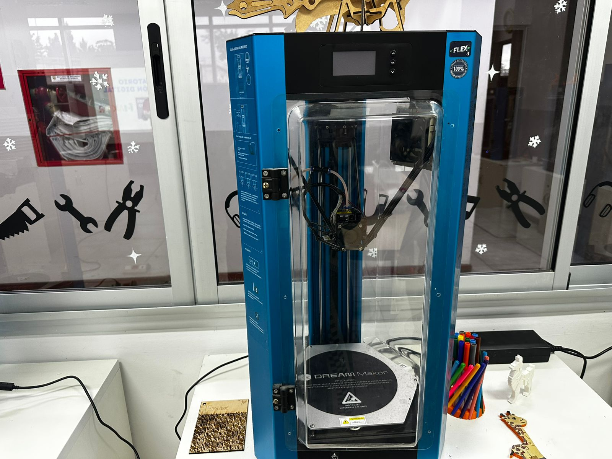
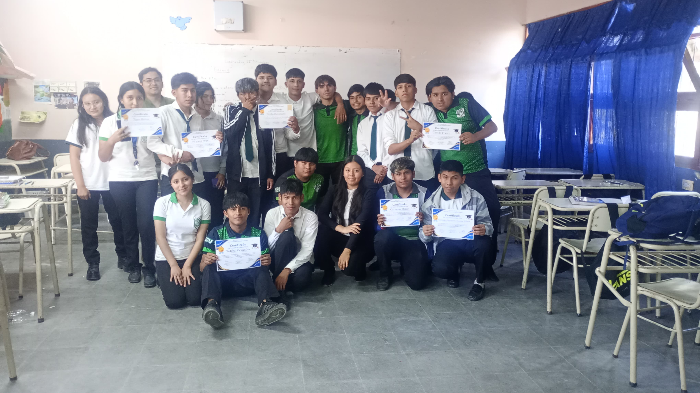
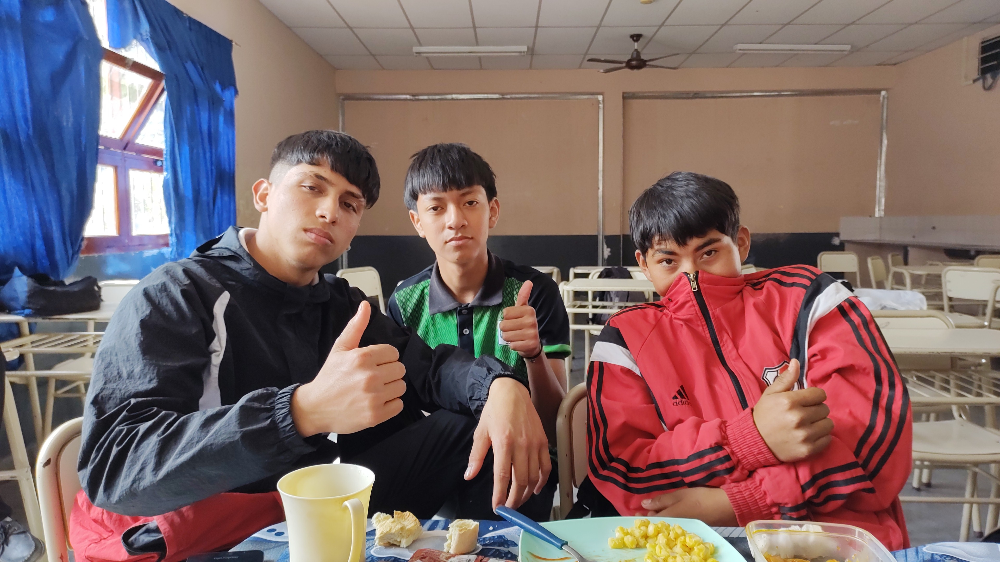

logo.png)
Cantidad de alumnos
23
estudiantes en total
Foto grupal

Sobre el curso
5° Segunda es un curso de quinto año del turno tarde, correspondiente al Bachiller con orientación en Informática. Combinamos las materias de siempre con una formación técnica en programación, diseño web y software libre.
Es nuestro último año, y lo vivimos creando proyectos propios, trabajando en equipo y preparándonos para los estudios superiores o el mundo laboral.
Nuestra orientación
Programación
Aprendemos a escribir código para resolver problemas.
Diseño y Desarrollo Web
Diseñamos y armamos páginas web, como esta.
Tecnología del Software Libre
Trabajamos con programas abiertos que cualquiera puede usar y mejorar.
Proyecto Tecnológico en Informática
Creamos proyectos propios aplicando todo lo aprendido.
Galería de fotos
Tocá una foto para verla en grande.






Videos
Materias
- Química
- Matemática
- Lengua y Literatura
- Inglés
- Psicología de las Organizaciones
- Taller Integrador de Ciencias Sociales y Lengua
- Programación
- Proyecto Tecnológico en Informática
- Diseño y Desarrollo Web
- Tecnología del Software Libre
Horario semanal
| Hora | Lunes | Martes | Miércoles | Jueves | Viernes |
|---|---|---|---|---|---|
| 13:30 - 14:10 | QuímicaOrellano, Carlos | ProgramaciónQuispe, Daniel (Supl. Rodríguez, Celeste) | QuímicaOrellano, Carlos | Psicología de las OrganizacionesBurgos, Nidia | Tecnología del Software LibreRodríguez, Rubén |
| 14:10 - 14:50 | |||||
| 15:00 - 15:40 | Proyecto Tecnológico en InformáticaRodríguez, Rubén | MatemáticaCardozo, Gladis | MatemáticaCardozo, Gladis | Lengua y LiteraturaChurquina, Irma | Lengua y LiteraturaChurquina, Irma |
| 15:40 - 16:20 | |||||
| 16:30 - 17:10 | Diseño y Desarrollo WebRodríguez, Rubén | Taller Integrador de Ciencias Sociales y LenguaVega, Griselda | Proyecto Tecnológico en InformáticaRodríguez, Rubén | InglésCastillo, Luis | InglésCastillo, Luis |
| 17:10 - 17:50 | ProgramaciónQuispe, Daniel (Supl. Rodríguez, Celeste) | ||||
| 17:50 - 18:30 | Tecnología del Software LibreRodríguez, Rubén | Psicología de las OrganizacionesBurgos, Nidia | Taller Integrador de Ciencias Sociales y LenguaVega, Griselda | Diseño y Desarrollo WebRodríguez, Rubén |
Materias de Informática
Profesores
| Materia | Profesor |
|---|---|
| Química | Orellano, Carlos |
| Matemática | Cardozo, Gladis |
| Lengua y Literatura | Churquina, Irma |
| Inglés | Castillo, Luis |
| Psicología de las Organizaciones | Burgos, Nidia |
| Taller Integrador de Ciencias Sociales y Lengua | Vega, Griselda |
| Programación | Quispe, Daniel (Supl. Rodríguez, Celeste) |
| Proyecto Tecnológico en Informática | Rodríguez, Rubén |
| Diseño y Desarrollo Web | Rodríguez, Rubén |
| Tecnología del Software Libre | Rodríguez, Rubén |
Información del curso
- Curso: 5° Año - División: Segunda
- Orientación: Informática
- Turno: Tarde
- Ciclo lectivo: 2026
- Colegio: Secundario N°7 Maestro Mario Humberto Pérez
Objetivos del curso
- Aprender y fortalecer los conocimientos.
- Trabajar en equipo.
- Respetar a los compañeros y profesores.
- Participar en actividades escolares.
- Prepararse para los estudios superiores o el mundo laboral.
- Finalizar exitosamente el último año.
Actividades
- Feria de Ciencias.
- Proyectos de programación y diseño web.
- Actos escolares.
- Proyectos grupales.
- Salidas educativas.
- Fiesta Nacional de los Estudiantes.